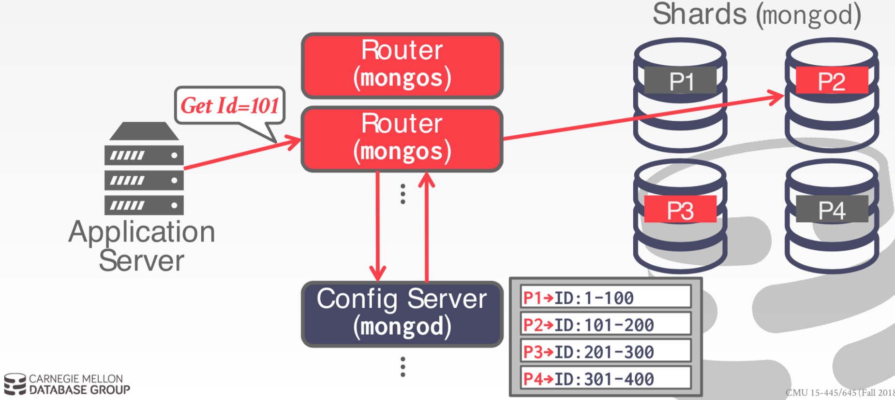

分布式 OLTP 数据库
并行 vs. 分布式
并行 DBMS ：
- 节点在物理位置上彼此靠近
- 节点通过高速 LAN 网络互连
- 假设通信成本很小
分布式 DBMS：
- 节点彼此远离
- 节点通过公共网络互连
- 通信成本或者通信问题不能被忽略
分布式数据库
使用我们在单节点DBMS中涵盖的构建块来支持分布式事务处理和查询执行 环境。
- 优化和规划
- 并发控制
- 记录和恢复
系统架构
DBMS 的系统架构指定了 CPU 可以直接访问的共享资源。
这会影响 CPU 之间的协调以及它们在数据库中检索/存储对象的位置。
- Shared everything
- Shared memory：CPU 通过高速内部连接访问内存，每个处理器有内存数据结构的全局视图；每个 DBMS 实例必须知道其他实例存在。
- Shared disk：所有 CPU 访问自己的内存，当时访问同一个磁盘。可以独立于存储层扩展执行层。必须在 CPU 之间发送消息获取当前的状态。
- Shared nothing：每个 DBMS 实例有自己的 CPU、内存和磁盘，节点仅通过网络互连互通。容易增加容量，很难保证一致性。
设计问题
应用如何找到数据？
如何在分布的数据上执行查询？
- 将查询推给数据
- 将数据拉到查询层
DBMS 如何保证正确性？
同构 vs. 异构
方法#1：同构节点
- 每个节点执行相同的任务（尽管存在痛不痛的数据分区）
- 使得配置和故障切换更容易
方法#2：异构节点
- 节点分配指定的任务
- 可以允许单个物理节点托管多个“虚拟” 专用任务的节点类型
MongoDB 集群架构
多个 Router(mongos)，一个 config server(mongod)，很多 shards(mongod)。

数据透明
用户不需要知道数据物理存放在哪里，表如何被分区或者复制。
在单节点DBMS上运行的SQL查询在分布式DBMS上的工作方式应该相同。
数据分区
将数据库分割到多个资源：
- 磁盘、节点、处理器
- 有时候也叫做“sharding”
DBMS 在每个分区上执行查询片段，然后将结果合并产生最终的查询结果。
单节点 vs. 分布式
单个节点事务仅仅访问在单个分区上的数据。数据库不需要协调其它节点上运行的并发事务。
分布式事务访问单个或者多个分区。需要很高的协调代价。
事务协调
如果我们的数据库支持多个操作和分布式事务，我们需要一种协调执行的方法。
两种方式：
- 中心的：全局“交通警察”
- 去中心的：节点自己组织
分布式并发控制
需要允许多个事务在多个节点上同时执行。
- 单节点 DBMS 许多相同的协议可以被使用
但是也很难因为：
- 复制
- 网络通信开销
- 节点故障
- 时钟歪斜
原子提交协议
当多节点的事务完成的时候，DBMS 需要询问所有节点是否可以安全地提交。
- 2PC
- 3PC
- Paxos
- Raft
- ZAB
- Viewstamped Replication
2PC
每个节点需要结论每个阶段的结果到稳定额存储日志中。
如果协调者故障会发生什么？
- 参与者必须决定接下来如何去做
参与者故障会发生什么？
- 如果未发生确认消息，则协调者假设它返回了 abort 的消息。
Paxos
共识协议：一个协调者提出提交或者中止的提议，参与者投票是否提议能够成功。
如果大部分参与者可用，则不会阻塞，在最好的场景下可以证明有最小的消息延迟。
Multi-Paxos
如果系统选择单个 leader 负责一段时间的提议变更，则可以跳过 prepare 阶段。
- 当出现故障时，回退到完整的 Paxos
系统必须周期性地更新谁是 leader。
复制
DBMS 可以复制数据到冗余节点上来增加可用性。
设计考虑点：
- 副本配置
- 复制模式
- 复制时机
副本配置
- 主-备
- 多主
复制模式
- 同步（备机日志落盘成功，返回给主机，主机返回应答消息给客户端）
- 异步（不等待备机任何消息，主机直接应答）
- 半同步（备机返回确认消息，但是备机日志不落盘）
复制时机
- 持续的：生成日志后立即发送日志消息，还需要发送commit/abort 消息。
- 提交时：DBMS 仅仅在事务提交时发送日志给副本，不会浪费时间发送中止事务的日志，假设事务的日志全部在内存中。
Active vs. Passive
- Active-Active：事务在每个副本上独立执行，需要在最后检查事务是否在每个副本上有相同的结果。
- Active-Passive：每个事务在单个点上执行，然后复制变更到副本。
- 跟主-备，多主不一样。
CAP 理论
Eric Brewer 提出，2002年被证明，对于分布式系统不可能同时满足：
- 一致性（线性一致性）
- 总是可用的
- 容忍网络分区
CAP for OLTP DBMS
DBMS 如何处理故障决定了它们支持的 CAP 定理的哪些元素。
传统/NewSQL数据库：停止下来不允许更新，直到大多数节点重新连接成功。
NoSQL DBMS：提供节点重连后解决冲突的机制。（CRDT）